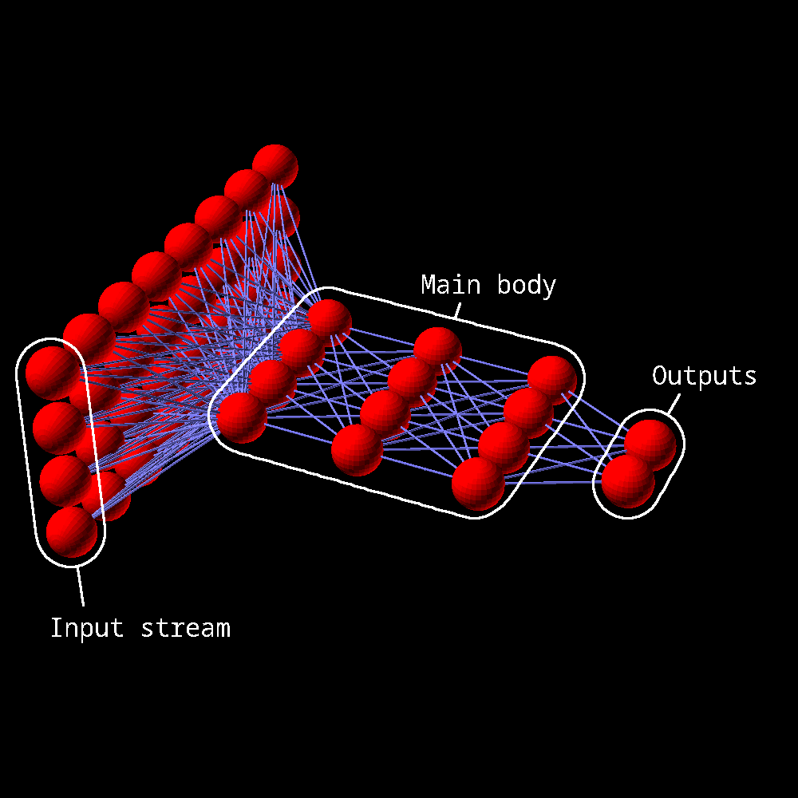

this warning lets the reader know something important about the page. If this sentence is still here on a page different than the testpage.html then I forgot to change it while making a new page.
link to this page
Beniaguev-Segev-London mimic neurons

BSL mimic neurons are neuron models using neural networks to mimic the spiking behaviour of the original neuron they were based on.
I've written a document here which explains this in more detail.
Benefits of the method
todo